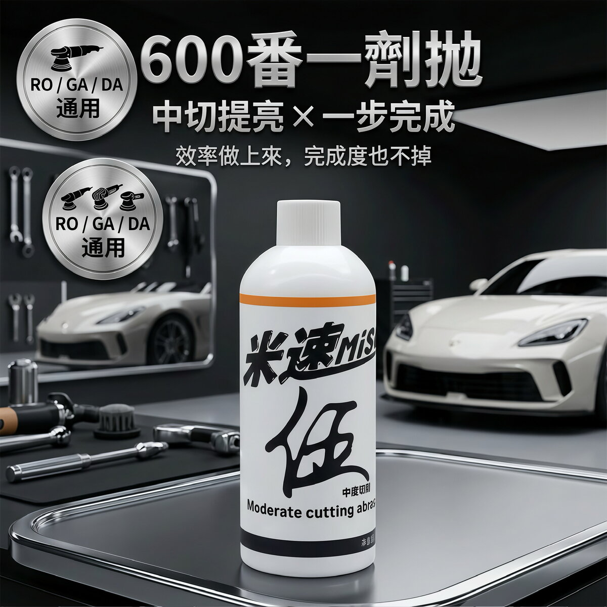

MISO No.5 One-Step (600 grit)
600-grit medium-cut compound that cuts and brings up gloss in one step. Good for moderate swirl marks and light-to-medium scratches, and it works on solid black paint and piano black finishes too.
Add to cart → fill in your details → send your order on WhatsApp; we confirm on WhatsApp whether each item can ship to your country and what shipping costs, then you pay

Real footage
This shot is from an application video on our Facebook page — that's the No.5 sitting on the roof.
Product description
Moderate swirl marks, light-to-medium scratches, and you don't want to just wade into solid black paint or piano black — MISO No.5 is the 600-grit medium-cut compound, a single product that can correct sanding marks up to 600 grit. The abrasive particles start out intact for medium cutting power, then break down into ultra-fine particles as the machine runs and shift into gloss work, so cutting and mirror finish happen in one step. It's a pure water-based formula with no fillers or oils to mask swirls, so what you see under a detailing light is the real state of the paint.
Specs
- Capacity
- 300g (single bottle; 3-bottle set also available)
- Grit
- 600 grit (medium cut); a single product corrects sanding marks up to 600 grit
- Dilution ratio
- No dilution needed, use straight from the bottle
- Compatible surfaces
- Solid black paint, piano black panels, high-gloss plastic trim on B-pillars, and acrylic; works on any color — solid black, soft paint, hard paint, and plastic trim are all fine. For paint damage within 1000 grit, one product with the dedicated wool pad can take you all the way through.
- Not for use on
- For paint that's already aged and oxidized, look at it first before you decide: if the oxidation hasn't eaten through the clear coat yet, you can polish it back. If the oxidation has soaked all the way through the paint, polishing won't bring it back — at that point the paint itself is beyond saving, it's not a compound problem. If you're not sure about the paint's condition, ask first before going straight to a heavy cut.
- Compatible machines
- Works with RO, GA, and DA polishers
- Pads to pair with
- Ultra-fine pure wool pad (the dedicated pairing for solid black paint and piano black). This is a starting point, not the only way to do it. How you pair pad and grit can be adjusted on the fly based on the result you're seeing — let what comes off the paint decide your next step.
How to use it
- Prep: Clean the paint thoroughly, remove iron fallout, tar, and other contamination, and keep the surface dry.
- Prime the pad: Apply a suitable amount of MISO No.5 onto the dedicated wool pad. The first time you use it, let the pad soak up a little product to prime it.
- Cutting stage: Spread the product evenly at low-to-medium speed, then add light pressure and increase speed to remove deeper fine scratches.
- Gloss stage: Once the product breaks down and the particles have dissolved, ease off the pressure and hold your speed to finish to a mirror.
- Final check: Wipe off the residue with a microfiber towel, then inspect the paint under a detailing light.
Things to know
- Always clean contaminants off the paint before you start, so they don't scratch the surface.
- We recommend using it with the pads we specify for the best results and safety.
- Solid black paint, piano black, B-pillars, and acrylic are extra-delicate surfaces, more sensitive than skin, so keep both pressure and speed more conservative.
- "One-step polishing" doesn't mean cutting corners: check the condition of the paint first, and only finish in one step if the paint allows it. Follow up with a fine foam pad if needed.
- The formula includes a dedicated protective carrier that helps dissipate heat and lubricate during polishing, but you still need to control speed and pressure and keep an eye on paint temperature.
- Follow the instructions, and test on a small, inconspicuous area first.
- We don't currently have a full ingredient list, pH value, or Safety Data Sheet (SDS) available to share. If you have concerns about the ingredients, please ask before you buy.
- Polishing kicks up dust and product spatter. Wear gloves and eye protection and keep the area ventilated. If it gets in your eyes, flush with plenty of water and see a doctor.
FAQ
No.3 is 80-grit heavy cut, for deep scratches and heavy oxidation. No.5 is 600-grit medium cut — the one-step polish formula corrects and brings up a mirror finish at the same time, so it's more efficient. For light-to-medium scratches, go with No.5 first.
In most cases the No.5 one-step polish gets you straight to a mirror finish, so you don't need to follow up with No.10. If the paint needs an extreme mirror finish (show cars, dark solid-color paint, for example), you can go over it once more with No.10 1000 grit for a final fine pass.
Works best with a coarse foam polishing pad (orange). If you want the one-step polish to also finish to a mirror, switch to a fine foam pad for the second half with the same compound. It's more efficient.
Application guide
Similar products


MISO No.5 One-Step (600 grit)
If you're ready to buy, add it to your cart and send your order on WhatsApp. If you're not sure it's right for your car, ask us on WhatsApp first before you order.